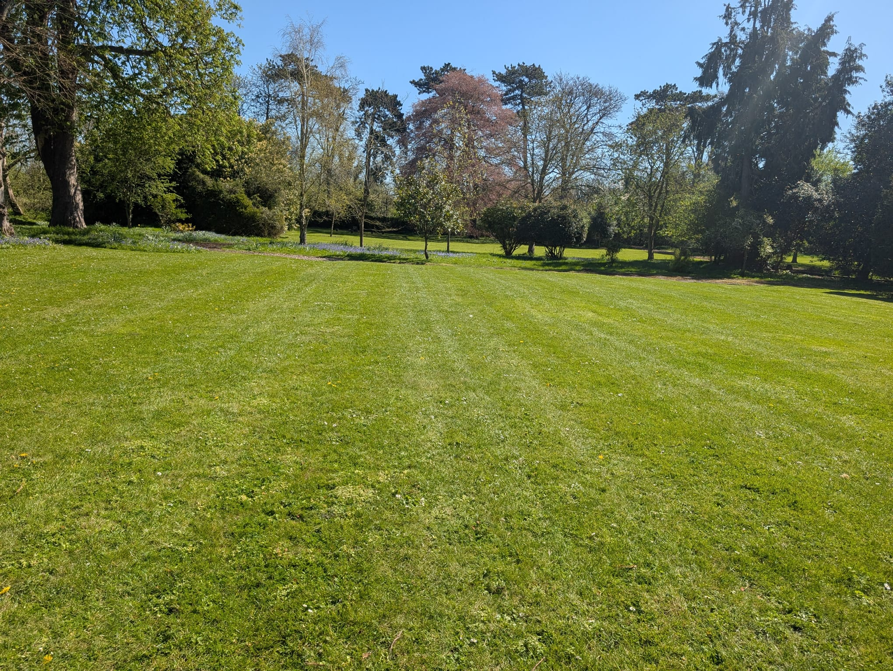
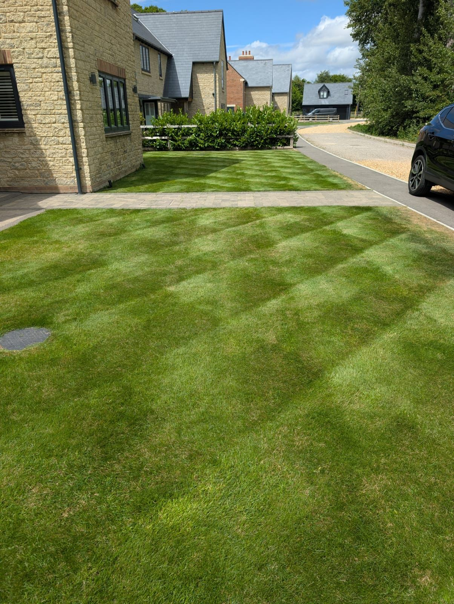
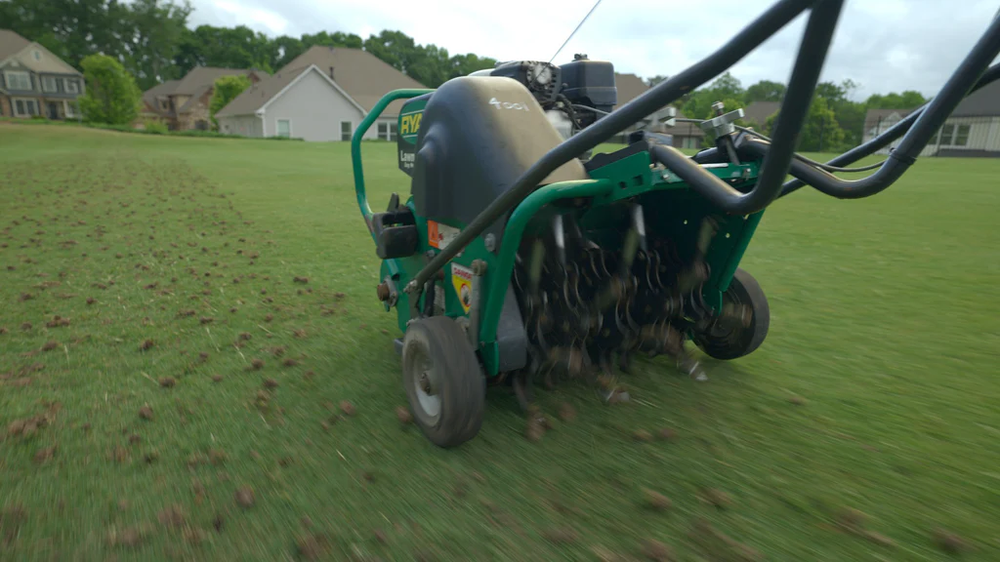

Lawn Fertiliser Treatments
Seasonal fertiliser applications to promote healthy growth, vibrant colour and strong root development throughout the year.

Healthy, greener lawns through expert treatments, renovation, aeration and seasonal maintenance.

A healthy lawn doesn't happen by accident. Whether your lawn is struggling with weeds, moss, compaction, drought stress or thinning grass, Green Seasons provides professional lawn care services across Oxfordshire to help keep your lawn looking its best throughout the year.
Every treatment is carried out by the business owner, ensuring consistent standards, expert advice and a personalised approach to every lawn.
Owner Operated
Tim on site, every visit
Fully Insured
Public & employer liability
PA1 & PA6 Qualified
Certified herbicide application
Commercial-Grade Products
Professional amenity treatments
Honest Advice
No upselling, just guidance
Bespoke Programmes
Tailored to your lawn's needs
Healthy grass starts with healthy soil. Through aeration, seasonal fertilisation, wetting agent applications and professional lawn renovations, we improve the condition beneath the surface where the real work happens. Stronger roots, better moisture retention and improved soil structure lead to a greener, thicker lawn that performs better throughout the year.
— Tim Harris, Green Seasons
From routine treatments to complete renovations — everything your lawn needs, carried out to a professional standard by the owner.
Seasonal fertiliser applications to promote healthy growth, vibrant colour and strong root development throughout the year.

Control dandelions, clover, plantain and other broadleaf weeds using selective herbicides that target weeds without damaging the surrounding grass.

Reduce moss build-up and improve grass density. Effective moss treatment as part of a broader lawn improvement programme.

Relieve compaction and improve the movement of water, nutrients and oxygen through the soil profile. Solid & hollow tine available.

Help lawns retain moisture and reduce drought stress. Particularly effective on hydrophobic soils prone to dry patch.

Complete rejuvenation for tired or damaged lawns. Scarification, aeration, overseeding and feeding in one comprehensive programme.
For lawns that need more than a tidy-up. A full renovation addresses the root causes of a struggling lawn and gives it the best possible start for the season ahead.
What's Included
Ideal for lawns suffering from moss, weeds, patchiness, compaction, drought damage or general decline.
Request a Renovation QuoteDrag to compare


Compacted soil prevents water, air and nutrients from reaching grass roots. Aeration breaks up this compaction, giving your lawn the breathing room it needs to thrive.

Spikes are pushed into the lawn to create aeration channels. Ideal for regular annual maintenance on moderately compacted lawns. Minimal surface disruption.
Cores of soil are extracted, creating larger channels for air, water and nutrients. Best for heavily compacted lawns or as part of a full renovation programme.
A well-maintained lawn needs the right treatment at the right time of year. Here's how we approach lawn care across the seasons.
March – May
June – August
September – October
November – February
Whatever condition your lawn is in, there's a solution. Here are the most common lawn problems we deal with across Oxfordshire.
Suffocating existing grass
Competing with healthy grass
Sparse, weak sward
Dead or absent grass areas
Restricting root growth
Poor drainage & standing water
Hydrophobic soil & drought stress
Burn marks & worn patches
Green Seasons provides professional lawn care services for commercial and managed sites across Oxfordshire. From presentation lawns at business premises to communal green spaces on residential developments, we deliver consistent, reliable results.
All commercial lawn programmes are tailored to the specific needs and presentation standards of your site, with flexible scheduling to minimise disruption.
Discuss Your Site


Common questions about our lawn care services in Oxfordshire.
September and October are usually the best months for lawn renovation in Oxfordshire. Soil temperatures are still warm enough to support germination, rainfall is more reliable, and the cooler air reduces stress on new grass. Spring renovation is possible but autumn gives the best results in most cases.
Typically 3–4 weeks, depending on germination and growth rates. You should wait until new seedlings are at least 5–6cm tall before the first light cut. Cutting too early damages the young plants and reduces establishment. Tim will advise on exact timings at the time of the renovation.
Most lawns benefit from annual aeration, ideally in autumn as part of a renovation programme. Heavily used or particularly compacted lawns may benefit from aeration twice a year — once in spring and once in autumn. Solid tine aeration is well suited to annual maintenance, while hollow tine aeration is best reserved for lawns with more significant compaction.
No. Green Seasons uses selective herbicides that target broadleaf weeds while leaving grass unaffected. These are professional-grade products applied at the correct rates by a PA1 and PA6 qualified operative. Selective weed control is one of the safest and most effective tools in lawn care when applied correctly.
Yes. Consistent watering is essential for successful germination after overseeding. In dry conditions, the seedbed should be kept moist — ideally twice daily for short periods — until the new grass is well established. Tim will provide full aftercare instructions at the time of the renovation.
Yes. Green Seasons can put together a bespoke annual lawn care programme covering seasonal fertiliser applications, weed and moss control, aeration and any other treatments your lawn requires throughout the year. This takes the guesswork out of lawn care and ensures your lawn receives the right treatment at the right time.
Green Seasons provides professional lawn care services throughout Oxfordshire. Click your nearest town to learn more about our local service.
Covering Oxford, Abingdon, Didcot, Witney, Wantage and surrounding Oxfordshire villages
Whether you're looking for a one-off treatment, annual programme or a complete renovation, we'd love to help. Get in touch for a free quotation.